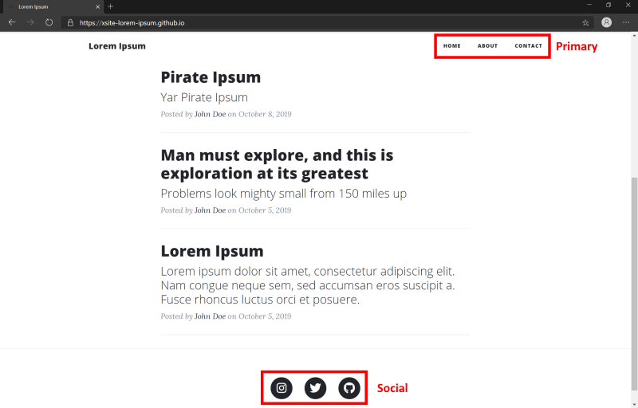
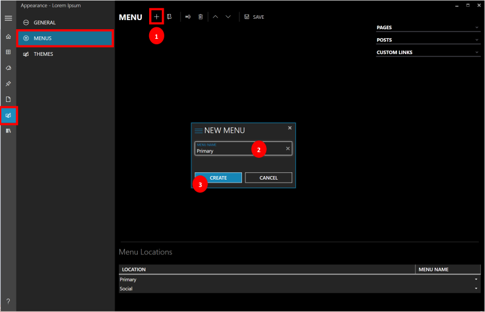
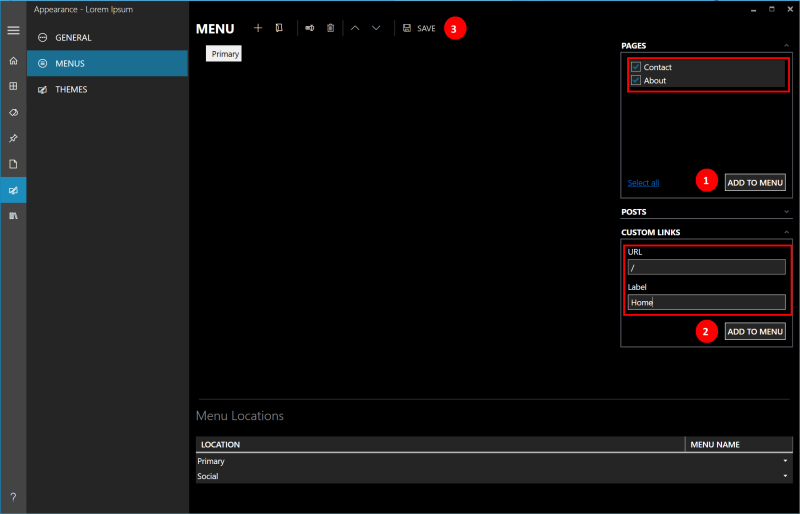
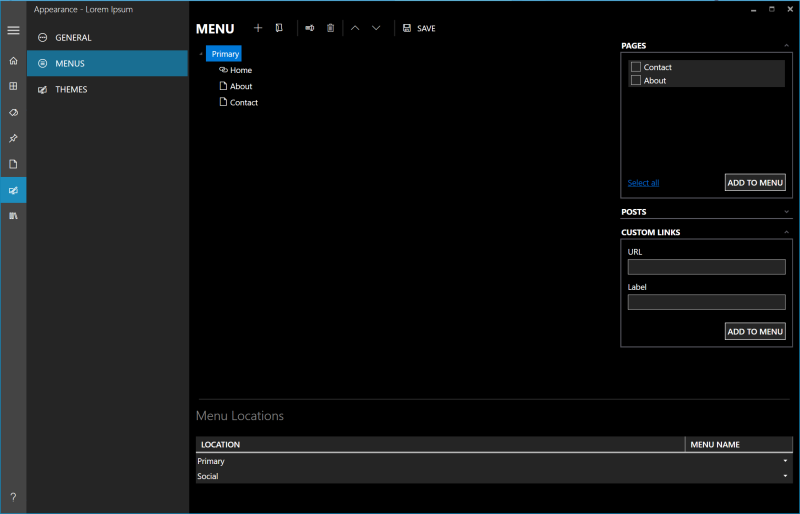
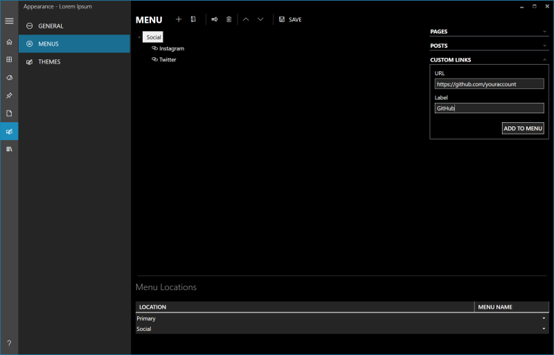
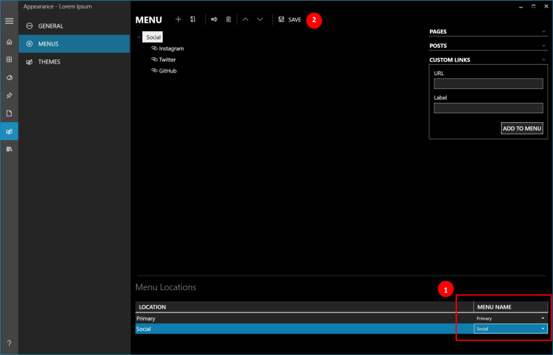

Create Navigation & Social Menus
October 29, 2019 by
Binny Kanjur
In this tutorial, we will be adding the main navigation (Primary) menu & the social (Social) menu to our blog.
The number of menus available is dependent on the selected theme. For the sample’s selected theme (Start Bootstrap Clean Blog), you will see 2 menu locations;
Primary
&
Social.

Create the Primary menu
- Navigate to the
Appearance
screen & select
Menus
- Click the
+(plus) button to Add a new menu.
- In the
New Menu
dialog that appears, provide
Primary
in the
Menu name
field & click
Create.

Add items to the Primary menu
- Expand the
Pages
section, select
Contact
&
About
pages & click
Add to Menu.
- In the
Custom Links
section,
- Provide
/
in the
URL
field.
- Provide
Home
in the
Label
field.
- Click
Add to Menu.

Save the Primary menu
- Use the Toolbars
Up
&
Down
buttons to rearrange the menu items.
- Click
Save.

Create the Social Menu
To create the Social menu, follow the same process as we did for the
Primary menu
earlier.
- Click the
+(plus) button to Add a new menu.
- In the
New Menu
dialog that appears, provide
Social
in the
Menu name
field & click
Create.
- Add links to Instagram, Twitter & GitHub. In the
Custom Links
section,
- Provide
https://www.instagram.com/accountname
in
URL
&
Instagram
in the
Label
field. Click
Add to Menu
.
- Provide
https://www.twitter.com/accountname
in
URL
&
Twitter
in the
Label
field. Click
Add to Menu.
- Provide
https://www.github.com/accountname
in
URL
&
GitHub
in the
Label
field. Click
Add to Menu.
- Click
Save.

Adding the menus to the blog
- In the
Menu Locations
section, associate
Primary
location to the
Primary
menu &
Social
location to the
Social
menu.
- Click
Save.

Next steps